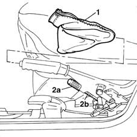
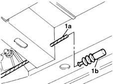

3380A44 handbrake/linkage protection - r+r
- Path
- Procedures > 33 BRAKING SYSTEM > 3380 HANDBRAKE > 3380A handbrake control and linkage > 3380A44 handbrake/linkage protection - r+r
- Kind
- repair procedure (removal / refitting; the operation number is the code)
- Applies to
- all engines; all production periods
- Interactive page
- https://sloeber94.github.io/elrnDB-fMltpl/en/#/2891667
Applies to: all engines; all production periods
 Removing
Removing
 Refitting
Refitting1. Open the left side door and remove the protective boot for the handbrake lever.
2. Undo the adjustment nut (2a), then disconnect the cable (2b) from the handbrake lever.

Applies to: all engines; all production periods
Place the car on a lift.
Raise the ramp.
1. Move the handbrake cable backwards, removing it via the opening towards the passenger compartment, then recover the cable protective boot (1b).

Applies to: all engines; all production periods
Refitting
RemovingPosition the cable in the protective boot.
Pass the cable through the opeing connected with the passenger compartment.
Lower the lift.
Position the handbrake cable and tighten the adjustment nut without locking it.
Topics linked from this page (1)
Topics that link to this page (22)
- 5010B46 central air duct to rear seat - arrange
- 5505C41 cabin wiring - r r
- 5550D18 handbrake on warning light switch - r+r
- 7005A34 front side door compartment seal r r
- 7015B42 TAILGATE OPENING INTERIOR CONTROL - R+R
- 7015B44 tail gate catch control cable - r+r
- 7030B06 sliding rooves (assemblies) - r r
- 7030B11 sliding roof(assembly, 1 front or rear - r r )
- 7030B20 sliding roof glass front or rear - r r
- 7030B23 MOULDING/SUPPORT seal for SLIDING ROOF GLASS PANEL, Front or Rear - R.R.
- 7030B24 sliding roof blind,front or rear - r r
- 7030B66 sun-roof movement ecu - r+r
- 7030B74 sun-roof wiring harness - r r or replace
- 7040H10 roof panel lining - r r
- 7040H16 roof panel lining - r r
- 7040H34 central pillar trim - r r
- 7040L13 passenger compartment floor soundproofing - r r
- 7040L17 passenger compartment floor front carpet - r r
- 7040L40 REAR COMPARTMENT SCUFF STRIP - R R
- 7065A10 , (One), front SEAT BELT left or right - R.R.
- 7065A12 front seat belt (one), lh or rh, with pretensioner on wheel - r r
- 7065A18 Front set belt HEIGHT ADJUSTER , (one), left or right - R.R.